Описание портфеля
Михаил Савин
Примечание:
В данном коротком отчете представлены некоторые наиболее сложные моменты
управления финансовым риском, которые часто спрашивали и мне
приходилось решать. Все данные, которые используются в представленных
вычислениях взяты из источников с свободным доступом. Вычисления,
графики и описание проводились мной лично с использованием программных
продуктов с открытым кодом, кроме Екселя, который является
собственностью Микрософта.
1 Вычисление и моделирование риска(VaR и другие меры)
1.1 Исторический и Аналитический VaR
Для иллюстрации вычисления VaR по отдельному инструменту воспользуемся
данными Газпрома, взятые с сайта Финам. На картинке ниже представлены
результаты вычислений VaR тремя методами 1) из предположения что
распределение остатков подчиняется нормальному закону(красная линия на
графике), 2) исторический квантиль(зеленая линия) и 3) по
модифицированной формуле(синяя линия). Кроме того осуществлена
ретроспективная проверка(backtesting) в окне 10 дней с триггером в
1%(1%-й VaR) по требованиям 2-го базельского соглашения.
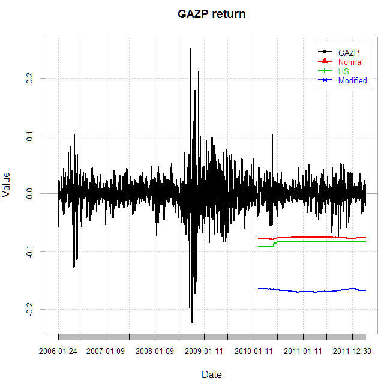
Проверка гипотезы о вероятности превышения 1% -й границы по модели
garch(1,1) предполагая что распределение потерь подчиняется нормальному
закону. Нулевая гипотеза - потери превысят 1%-ю границу. Участок до 2010
года(1000 измерений) используется для определения параметров модели а
остальная часть(542 дня) для ее валидации.
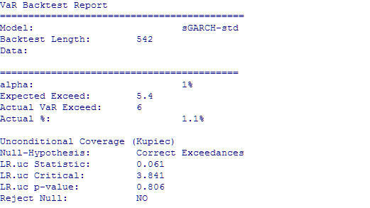
Согласно теста нельзя отметать нулевую гипотезу, т.е.вероятность
превышения заданного уровня триггера(норматива). Красная линия на
графике подтверждает, что во второй половине 2011 года было превышение.
1.2 Манипуляция величиной VaR
С практической точки зрения VaR, как мера риска, не лишен недостатков.
Чаще всего на практике нарушается принцип субаддитивности. Для примера
возьмем требование Базеля II 1%, 250 дней и скользящее окно в 10 дней.
Предположим, что мы имеем в определенный момент величинаму риска равную
VaR0, и желаем ее уменьшить до VaR1. Используя деривативы желаемый
результат можно получить довольно просто. Например продаем пут опцион с
страйком выше VaR0 и покупаем другой со страйком ниже VaR1. Необходимое
количество опционов и цены находятся оптимизацией. Результатом таких
манипуляций, с практической точки зрения, будет увеличение риска,
снижение доходности и изменнение величины VaR с VaR0 до VaR1. На рисунке
ниже представлена подобная картина где кривая доходности до манипуляции
представлена непрерывной линией
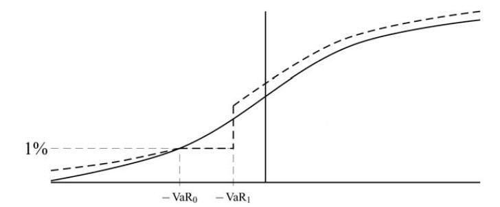
Такого рода изменения в балансах довольно трудно поддаются идентификации и нередки, особенно после 2007 года.
1.3 Риск портфеля
Исходя из проблем, которые возникают при использовании VaR на практике, о
которых упоминалось в предыдущей части были предложены другие меры,
которые устраняют определнные недостатки VaR. Среди них стали
популярными такие меры как условный VaR(CVaR). максимально возможный
убыток(MaxLoss). максимальное среднее отклонение(MAD), условный убыток к
риску(CDaR) и др. Для моделирования взяты данные компаний, большинство
из которых входят в индекс ММВБ 10(данные с сайта Финам). Часть данных
представлены ниже в таблице
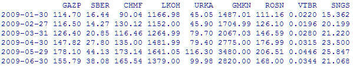
На основании данных построим профили различных мер риска на определенную дату, например на начало 2012 года.
Для наглядности сравнения построим эффективные траектории такого
портфеля по упомянутым мерам и представим их в профилях влияния на
доходность портфеля. Резулььтаты представлены на графиках ниже для
упомянутых выше мер и классической меры по Марковицу(Risk).
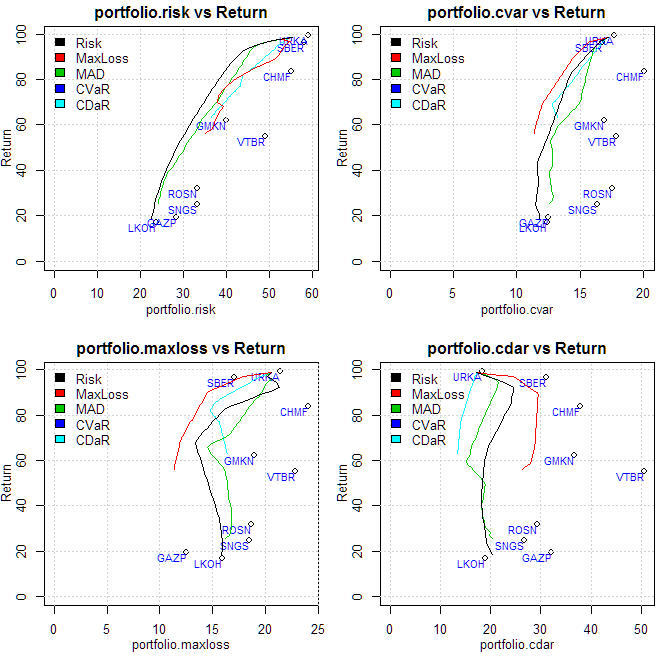
Ниже представлены графики переходов(изменение весов акций в портфеле) в зависимости от уровня риска портфеля.
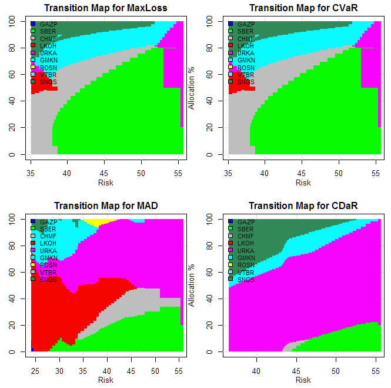
2 Риск по регионам и странам
2.1 Риск по регионам
При анализе динамики регионов используются данные, которые предоставляют
Фама и Френч по всем высококапитализированным акциям каждого региона.
Методология основана на эффективной границе, построенной по Марковицу за
три последних десятилетия.
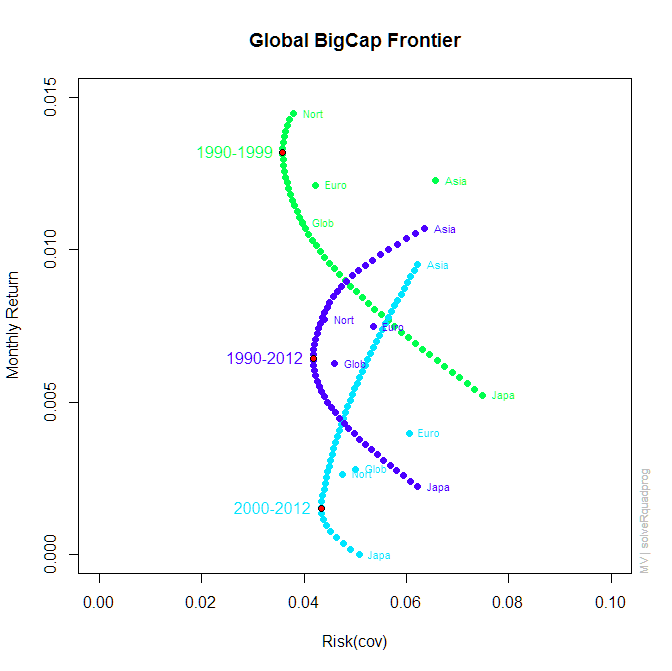
Из графиков эффективной границы видно что в течение последнего
десятилетия доходность резко уменьшилась а риск увеличился во всех
регионах. Также по границе за 2000-2012 годы видно, что Азиатский и
Европейский регионы стали наиболее привлекательными по доходности.
Примечательно, что лидером по динамике доходность-риск за последние три
десятилетия является азиатский регион(падение доходности от 0,012 до
0,009 и уменьшение риска на 0,001).
2.2 Исторический анализ в разрезе стран
Анализ в данном разделе осуществляется на основе данных из баз данных
Мирового Банка и рыночным ценам с сайта яху-финанс. Динамика изменения
капитализации рынков стран за предыдущие 20 лет представлена на
отдельных графиках.
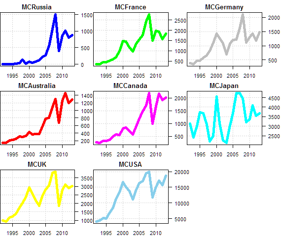
На графиках примечательны несколько моментов:
- Капитализация рынка Японии высоковолатильная без ярковыраженной тенденции в долгосрочном периоде
- США, Канада и Австралия практически вернулись к докризисным пиковым значениям капитализации.
Периодическая таблица доходностей страновых индексов по данным с
яху-финанс, приведенная ниже также подтвреждает факт высокой доходности
Канады и Австралии за последние 5 лет.
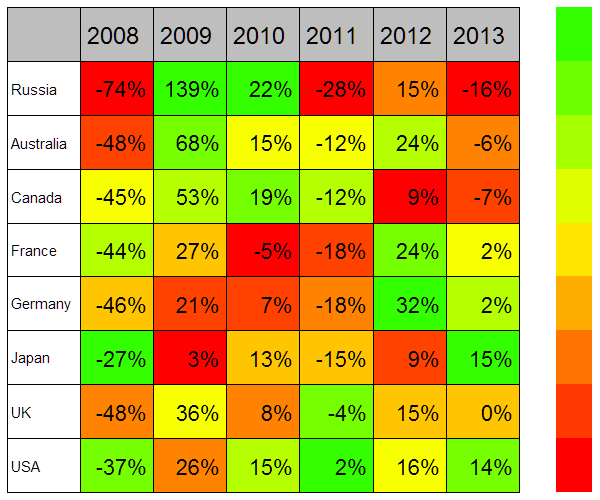
2.3 По монетарным и фондовым индексам в разрезе стран
Веса стран по капитализации в общей капитализации выборки по состоянию на Декабрь 2012 года.
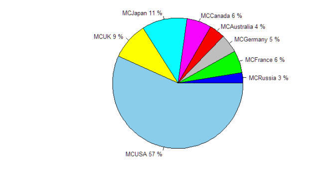
В таблице вычислена доходность по каждой стране и риск, вычисленный как
превышение доходности над рыночной к величине вариации портфеля. Веса те
же что представлены на предыдущем графике(круговая диаграмма).
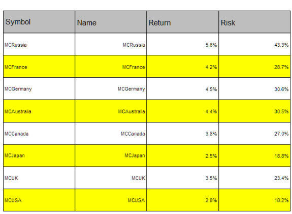
Из таблицы видно, что лучшее соотношение доходность к риску у Германии и Австралии.
3 Риск по отраслям экономики
В данном разделе я воспользуюсь результатами предыдущего раздела
представленными на круговой диаграмме рыночной капитализации. Из
диаграммы видно, что США, Япония и Англия в сумме представляют около 80 %
общей капитализации выборки. Львиная доля принадлежит США(57%). Резонно
предполагать, что движение средств между отраслями, и соответственно
изменение цен на рынке, в основном осуществляются этими рынками. Для
примера ниже представлен отраслевой анализ рынка США как наиболее
капитализированного. Данный анализ производится на основании ликвидных
отраслевых фондов рыночного индекса S&P500. В таблице представлены
последние три строчки данных. Анализ проводится на основе данных за
последние десять лет.
|
Date
|
XLB
|
XLE
|
XLF
|
XLK
|
XLI
|
XLP
|
XLU
|
XLV
|
XLY
|
|
2012-12-27
|
-0.35
|
-0.17
|
-0.37
|
-0.11
|
-0.16
|
0.17
|
-0.18
|
-0.15
|
0.13
|
|
2012-12-28
|
-1.26
|
-1.76
|
-0.81
|
-1.13
|
-1.11
|
-1.05
|
-1
|
-0.99
|
-0.82
|
|
2012-12-31
|
1.93
|
2.24
|
1.3
|
1.73
|
1.8
|
1.28
|
1.35
|
1.07
|
1.99
|
На начальном этапе посмотрим визуально на кумулятивные доходности отраслей.
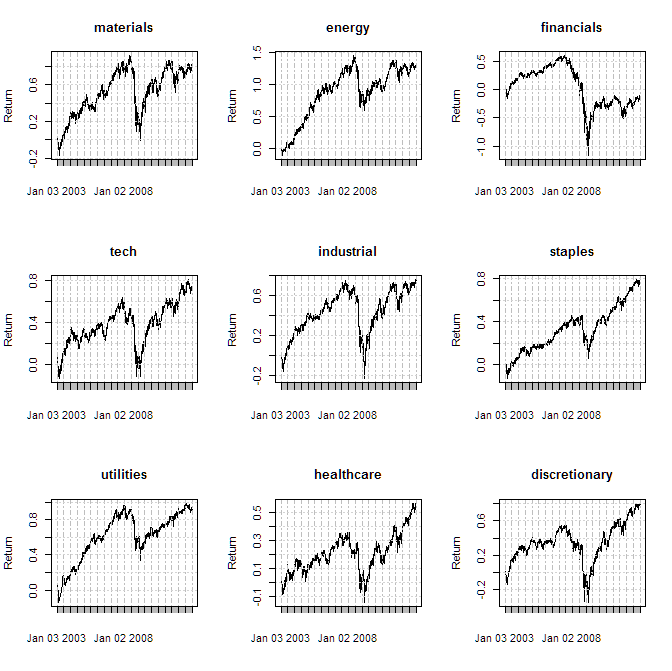
Далее по данным о доходностях секторов посмотрим на структуру ковариации секторов в динамике.
Для данного примера воспользуемся методологией анализа главных
компонент. Результаты представлены графически в динамике по компонентам
ниже.
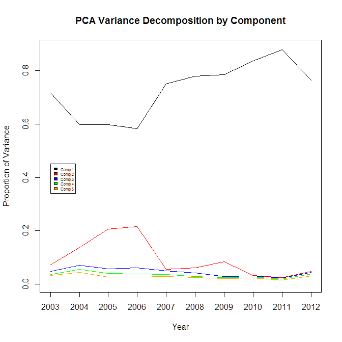
Из рисунка видно, что главная компонента(с номером 1) имеет огромное
влияние на доходность рынка(более 60 % практически за весь анализируемый
период).
В то же самое время данная компонента является нестабильной, что
затрудняет ее практическое использование(ее изменение за сравнительно
короткое время превышает сумму компонент 4-5).
Вторым значимым наблюдением из разложения на компоненты является резкое
изменение главной компоненты, которое характеризуется повышением
коррелляции вариации движения отраслей и началось в 2007 году в 2012
году начало резко уменьшаться и вполне возможно, что этот режим развития
экономики закончился.
Следующим шагом определим динамику риска через вариацию весов портфеля составленного из секторов по теории Марковица.
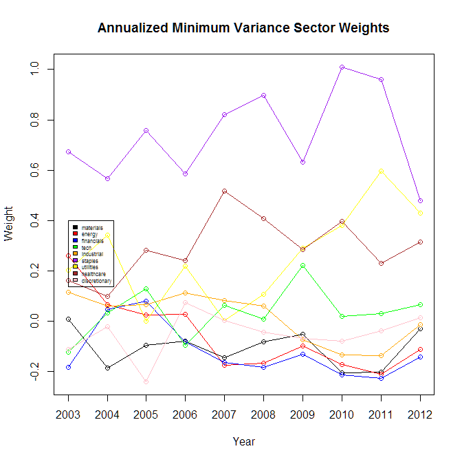
Вариация весов секторов в портфеле характеризует риск вложения в каждый
конкретный сектор экономики, а величина и тренд весов является признаком
притока или оттока денег из данного сектора.
Примечательно, что с момента начала кризиса(2008г.) в группу с
минимальным изменением весов попадают энергетика, продажи автомобилей и
запчастей к ним, а также финансовый сектор.
4 Риск ликвидности
Данный тип риска явояется наиболее разработанной, но не самой простой
частью менеджмента риска. Многие части процесса управления риском
ликвидности описаны в деталях в инструкциях и положениях центробанков.
Например управление ГЭП-ом(разрывом). Из моей личной практики наиболее
сложной частью данного процесса является управление текущей или
мгновенной ликвидностью. В период моей деятельности, когда я отвечал за
этот участок, мне пришлось разработать собственную методологию и
управленческую отчетность на ежедневной основе для обеспечения
оптимальных показателей фондирования-вложения средств. К чему пришел
приведено на картинке ниже
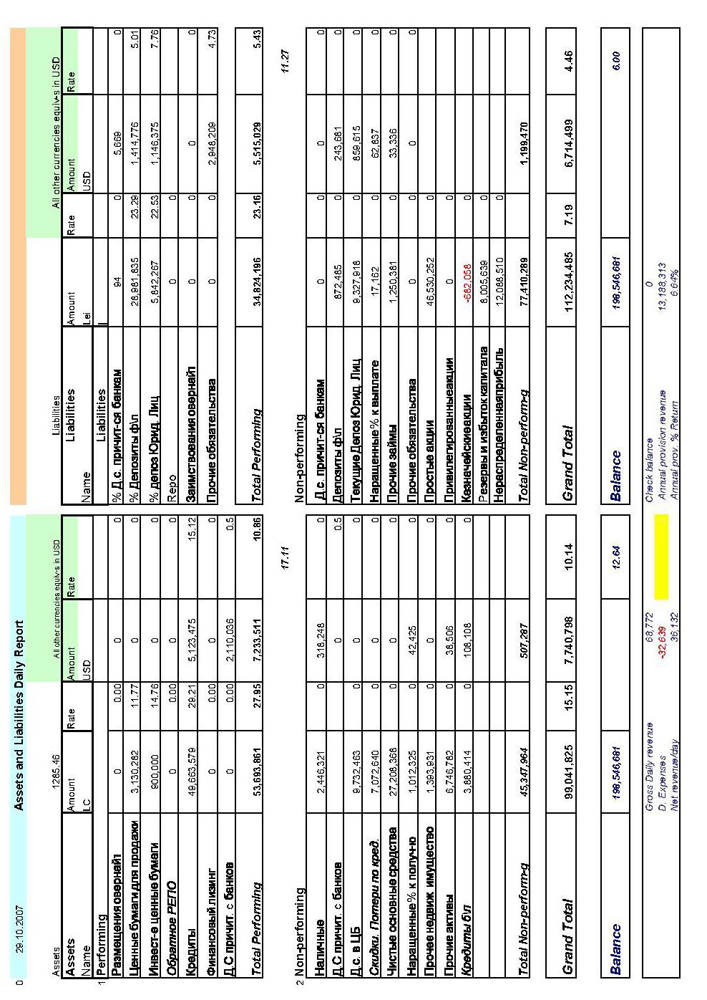
Данная модель позволяет контролировать маржу и видеть ежедневно
изменения по группам активов, пассивов капитала и мгновенный прогноз по
годовым показателям прибыли и убытка. Кроме этого модель позволяет
быстро провести грубое стресс тестирование изменения курса корзины
валют.